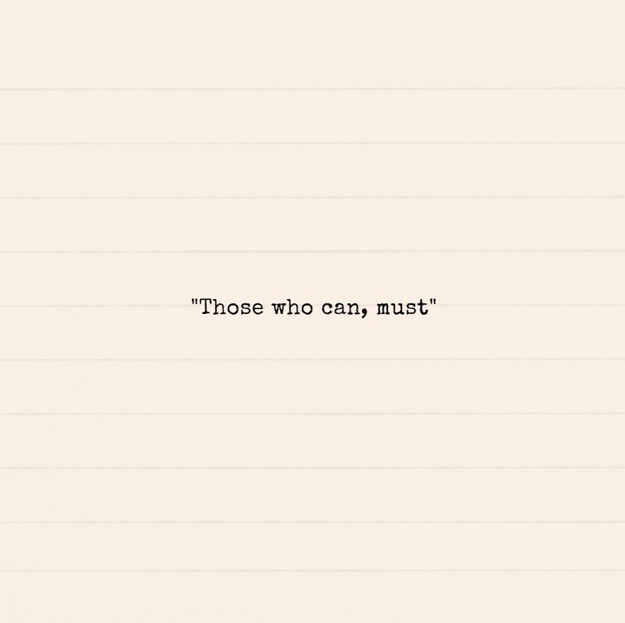
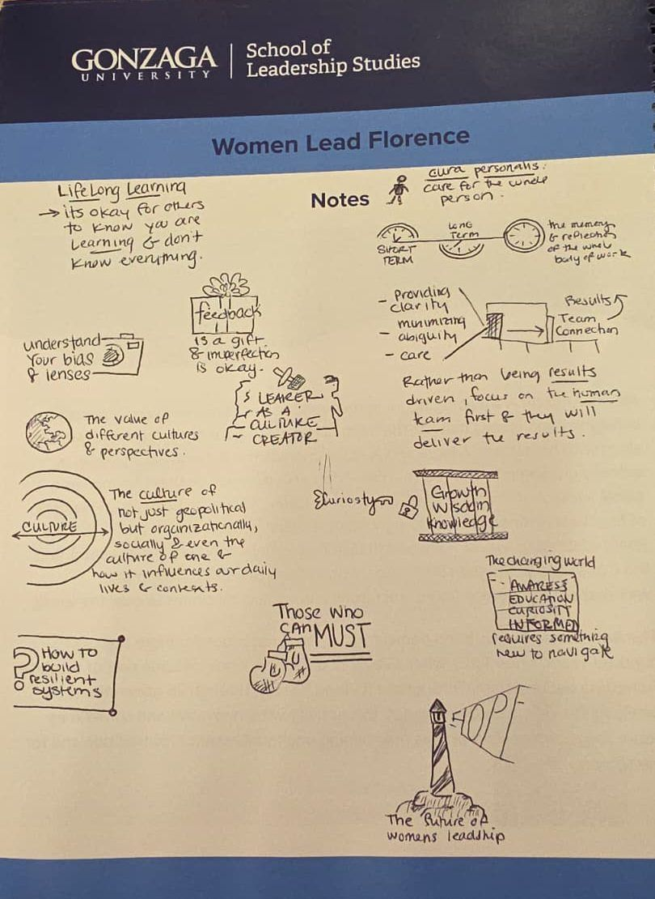
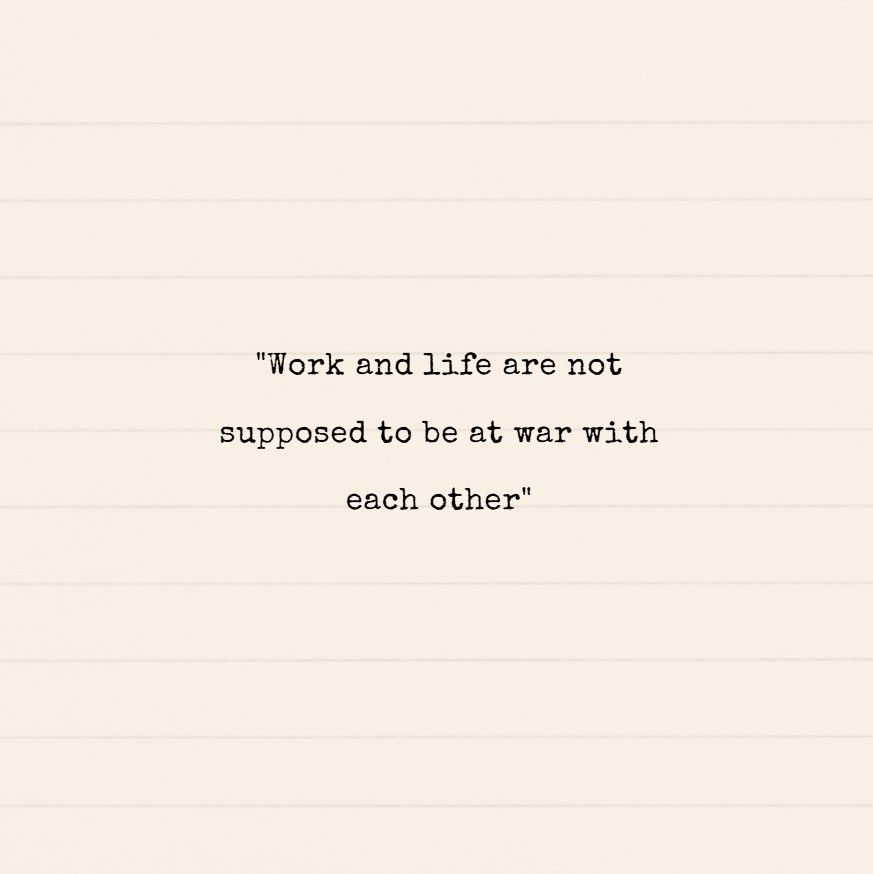
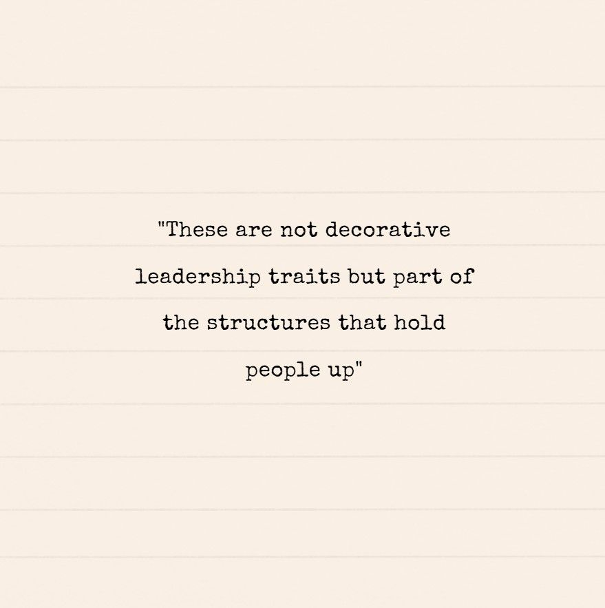
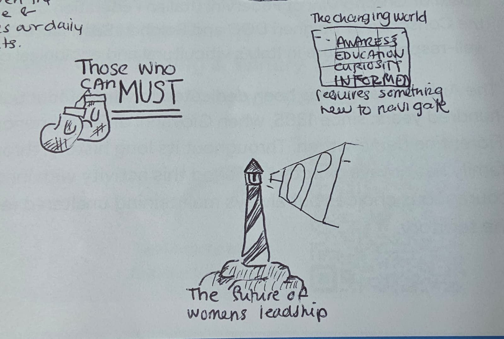

Journey 06 · Firenze Note 5 of 11 Field Note
Lead Beautifully, Live Beautifully
Field notes from Florence on la dolce vita and refusing to confuse exhaustion with seriousness.
Sarah Kinsella is a Gonzaga alum and executive marketing leader whose work has centered on building teams, navigating change, and developing people. That she was in Florence sharing what she has learned says something about her generosity and genuine belief that leadership is something worth passing on.
Her session gave me the kind of practical wisdom I tend to trust and use most: not a polished theory or a corporate-polished slide show, but a set of questions about what we are doing, why we are doing it, and whether the way we lead is costing us more than it should. It opened into a conversation that I am still thinking about with a simple phrase that has stayed with me:

Those who can, must. I did not hear it as a demand to do everything. I heard it as a call to attention. If you have knowledge, share it. If you have access, use it well. If you have influence, pay attention to what it makes possible. If you can build something more resilient, build it. If you can offer clarity where there is confusion, do that. If you can care for the whole person instead of only the output they produce, choose that.
That last piece is easier to admire and harder to practice.

Caring for the whole person, or cura personalis in the Jesuit tradition Gonzaga carries, is one of those ideas that sounds generous in theory and becomes genuinely inconvenient in practice. It requires time, it requires attention, it requires seeing people as more than their usefulness, which runs against a lot of what modern organizations actually reward.
And it also requires curiosity.
Curiosity is humble in a way that expertise sometimes is not. It begins with the honest admission that you do not already know everything: not every culture, not every pressure, not every reason someone responds the way they do. Curiosity encourages you to ask better questions. It invites you to receive feedback without treating imperfection as catastrophe. Curiosity is what lets people keep learning without requiring them to pretend they have already arrived someplace.
In Florence, that felt less like a professional skill and more like a way of moving through the world. The city resists efficiency at every turn if you let it.

A meal takes time. A conversation stretches long past the point where an American would have wrapped it up and moved on. A street opens into another street and another. Beauty keeps interrupting your agenda. The culture around food, relationship, place, and attention kept insisting on something I needed to hear: that work and life are not supposed to be at war with each other.
Rather than focusing on being a results-driven manager who hits quotas and tracks outcomes, start with the human being in front of you. The results come from there.
That is easy to make sentimental, but I do not think it is soft. Providing clarity, minimizing ambiguity, building genuine connection, understanding the cultures you are working inside, continuing to learn… these are not decorative leadership traits but part of the structures that hold people up. It is how we keep functioning when the world changes faster than anyone planned for.
Toward the end, the conversation turned to the question of the future.
What does women’s leadership look like from here? The honest answer in that room was that nobody was pretending the path is clear or that progress only moves in one direction. There was weight in that acknowledgment, but also a refusal to allow it to be only heavy.

As the conversation flowed, I drew a lighthouse at the bottom of my page.
I do not fully remember the exact moment I drew it, but I know why it belongs there. A lighthouse does not stand on its rock for its own sake. It does not know most of the ships it guides, and it cannot see the people it keeps safe or the voyages it makes possible. It just holds the light, steadily, in the direction of the open water.
That is what hope looks like in practice, I think. Not optimism exactly, or the pretense that the seas are calm when they are not. But the decision to keep the light on anyway, for the community you can see and for the one you cannot. For the women in the room, and for the ones who will come after them.

Those who can, must.
Lead beautifully. Live beautifully.
It isn’t a reward for finishing the hard work, it is just part of how that work gets done.
Mentioned in
Originally published at fieldnotesfromabroad.com/2026/05/19/lead-beautifully-live-beautifully/